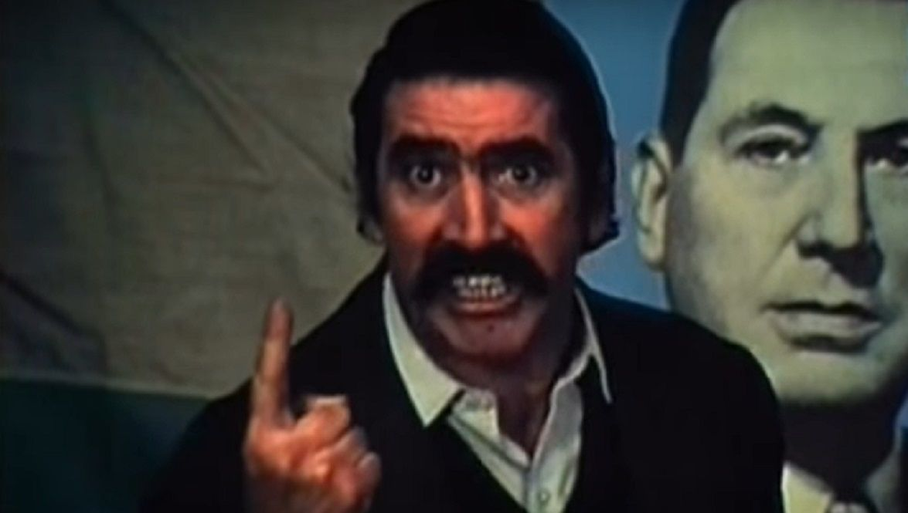
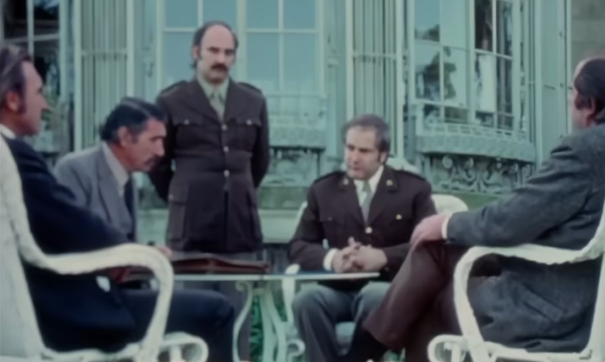

“Basta hacer un recorrido por los barrios populares para observar la eficacia de un instrumento así. ¿Cuántas mujeres vemos en sus casas leyendo fotonovelas?, ¿y cuántos obreros las leen camino al trabajo?” Sobre esta premisa, abiertamente debatida dentro de una zona del cine militante, posicionado en la izquierda revolucionaria, el director Raymundo Gleyzer de quien se cumplieron cincuenta años en estos días de su desaparición forzada, concibió en 1972 “Los traidores”. Militante de PRT, un partido que proliferó a partir del golpe militar de 1966 y abruptamente menguó con los ensayos de terrorismo estatal para 1974, y del activismo audiovisual; creó su único largometraje de ficción, dentro de una filmografía en la que privilegió el testimonio directo mediante el empleo de los procedimientos documentales.

Resulta estéril pensar un escisión nítida entre esas fronteras delimitadas por las convenciones del cine industrial -ficción opuesta al documentalismo. Dado a su carácter clandestino, contrainformativo, y de puesta en acto, que realizadores o colectivos cinematográficos ejercieron en las varias experiencias de cine militante, forma y recursos fueron deliberadamente hibridados. Raymundo, entre su filmografía, llevó adelante una radiografía de una revolución traicionada por las elites priistas, en su documental “México, la revolución congelada” (1971), coincidente también con el cierre de un circuito latinoamericano que tuvo su origen en el cortometraje brasilero, “La tierra quema” (1964).

En igual sentido, es intencional la elección de Gleyzer de un lenguaje proveniente de un género masivo como el de la fotonovela, para narrar, desde las claves dramáticas y seriadas que el formato le proponía, el ascenso, la metamorfosis y la(s) traición(es) del dirigente sindical Roberto Barrera. Esto lo distancian de la sobriedad y cierta ampulosidad de otros productos de la misma coyuntura, como los realizados por el Grupo “Cine Liberación”, brazo fílmico del peronismo. Este filme retrata la agonía del régimen dictatorial pero sobre todo las contiendas intestinas de una cúpula sindical adosada al peronismo más ortodoxo como a las cúpulas castrenses, y desbordada por las luchas clasistas que el Cordobazo inauguró en casi todo el país al terminar los ’60, orientaron su elección en ficcionalizar la parábola de arribismo y tragedia de un burócrata gremial. Con ciertos tonos y ademanes, y un profuso bigote al uso que despertarían en lxs (posibles) obrerxs espectadores, una inmediata asociación con un pesado de la CGT como Rucci.
Barrera es no obstante un arquetipo. Más allá de los rasgos aparentes, es todos y cada uno de aquellos que se construyen en las prácticas más nefastas dentro de las acciones propiciadas por las clases trabajadoras a las que conducen. Su muerte, aunque debatida por actores y técnicos desde el sentido cooperativo que la película asumió, apela más que a una respuesta definitiva, a una toma de conciencia y la adopción de estrategias de base en las formas de organización colectiva, frente a una manera de ejercitar el poder que, desde la derrota de 1976, no ha perdido vigencia.